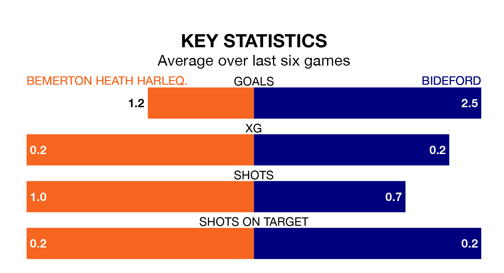

Bideford come to play Bemerton Heath Harleq. on late Tuesday in excellent form, having collected 16 points from their last six games.
The visitors have won five and drawn one of their last six fixtures, while Bemerton Heath Harleq. have two wins and four losses.
With 39 goals in 22 games so far this season, Bemerton Heath Harleq. are scoring more than average in the league with 1.8 goals per game. And they are conceding at an average rate, letting in 38 goals at a rate of 1.7 per game.
Bideford, meanwhile, are average scorers, with 1.7 goals per game. They have conceded 1.3 goals per game.
The away side are fourth in the table after 19 games, of which they have won 11 and drawn four, earning 37 points.
The hosts are three places behind Bideford in seventh, with 10 wins and three draws putting them on 33 points.
Bemerton Heath Harleq.'s last match was on Saturday, a 2-1 loss against Evesham United.
Bideford drew 1-1 with Mousehole last time out, on January 13.
Updated: 13:20 (UTC), 29/01/24